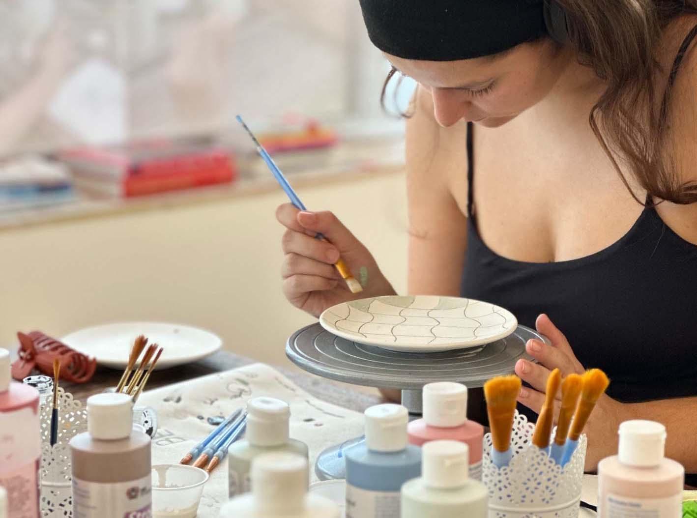

A arte une as pessoas independentemente da idade e das capacidades. Oferecemos a lares de idosos, centros de dia e instituições sociais para crianças e adultos a oportunidade de pintar cerâmica em conjunto. No nosso estúdio ou nas vossas instalações.

A pintura de cerâmica é uma atividade que pode ter um efeito terapêutico. Envolve a mente, as mãos e o coração. Os movimentos suaves e repetitivos podem ser profundamente relaxantes, enquanto o processo criativo estimula a autoexpressão e a ligação entre as pessoas.
Cada participante pinta a sua própria peça, com acompanhamento paciente e cuidadoso da nossa equipa experiente.

Uma atividade suave e estimulante que desperta os sentidos e promove a interação social. Perfeita para programas de grupo regulares ou ocasiões especiais.

Um espaço de apoio onde crianças e jovens podem explorar a sua criatividade, desenvolver a motricidade fina e experimentar a alegria de criar algo com as próprias mãos.
Contacta-nos para discutir as necessidades, o tamanho do grupo e quaisquer requisitos especiais. Ajudamos a escolher entre sessões no estúdio ou nas vossas instalações.
Levamos todos os materiais, ferramentas e orientação necessária. Escolham entre canecas, pratos, taças ou azulejos — o que melhor se adaptar ao vosso grupo.
Cada um pinta ao seu ritmo com o apoio da nossa equipa. Sem pressão — apenas criatividade e ligação.
Levamos as peças para cozedura e vidragem profissionais. Em 7 a 21 dias, entregamos as cerâmicas acabadas na vossa instituição.
Sessões no nosso estúdio em Alcântara, ou deslocamo-nos às vossas instalações com tudo o que é necessário. Adaptamos ao que for mais conveniente para o vosso grupo.
De pequenos grupos de 5 a 30 participantes. Adaptamos a sessão ao tamanho, ritmo e necessidades específicas do vosso grupo.
As sessões têm normalmente 2 a 3 horas, mas somos flexíveis. Ajustamos o tempo ao ritmo e agenda dos vossos participantes.
Preços institucionais especiais para garantir a acessibilidade. Contacta-nos para um orçamento personalizado com base no tamanho do grupo e localização.
Entra em contacto através de [email protected] e preparamos uma proposta personalizada para a vossa instituição.
Tudo o que precisas de saber sobre o nosso estúdio, o processo de pintura e muito mais.
Ver FAQ